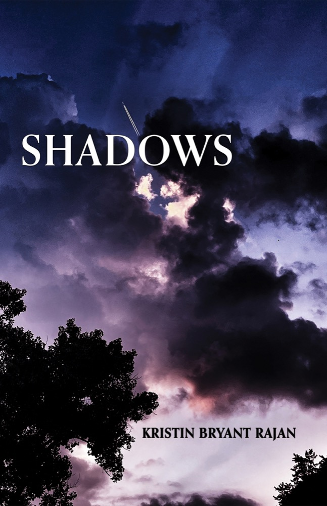

The Book!

Shadows
“Compassion is born from understanding suffering.” — Thich Nhat Hanh
A confessional bildungsroman in poems: I came to understand the suffering of the one who caused my suffering. This awareness burned away bitterness, leaving only love. My pain combined with reflection taught me compassion. These poems illustrate that journey.
Stunning photographs by Laura Bendoly.
“Eight Candles” is a Pushcart and Best of the Net nominee, originally published as a creative nonfiction piece in Watershed Review. The other poems are published in an anthology and various creative writing journals.
“These four long poems draw readers into a deep pool of memory where they encounter a voice that negotiates self with love, family, and loss. This voice is clear and strong and simultaneously vulnerable, creating a stark tension that propels readers through lines and images filled with candor and longing. Thoughtful readers will finish this book and be a different person than when they started.”